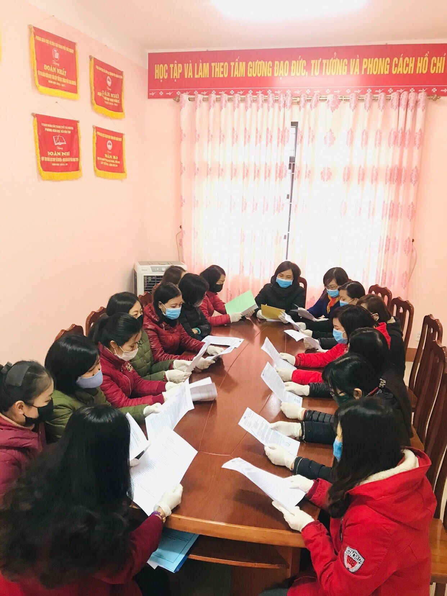
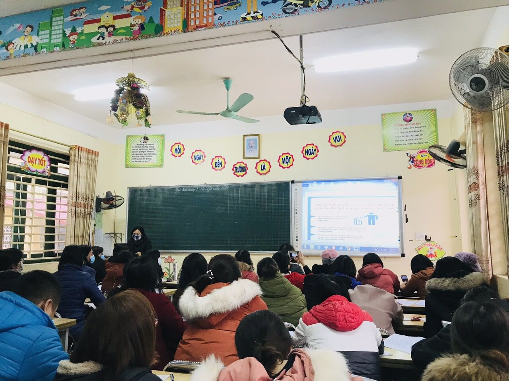
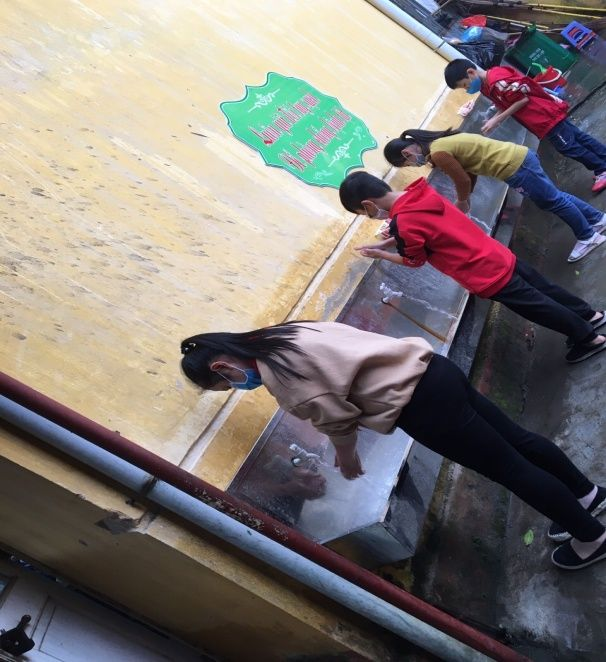
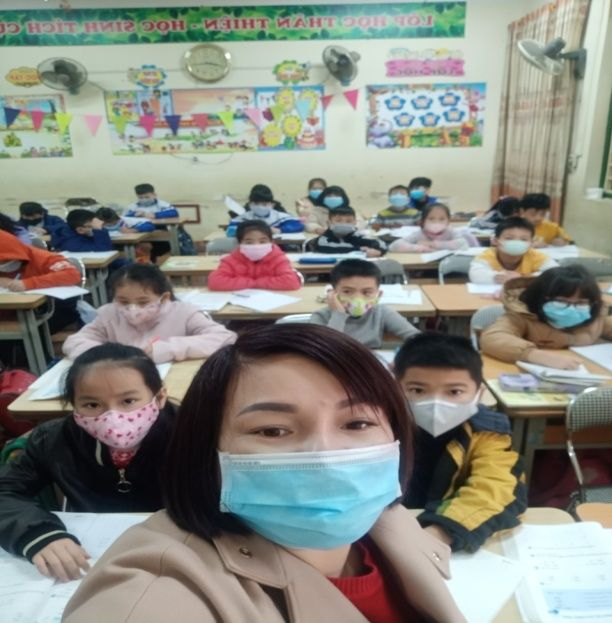
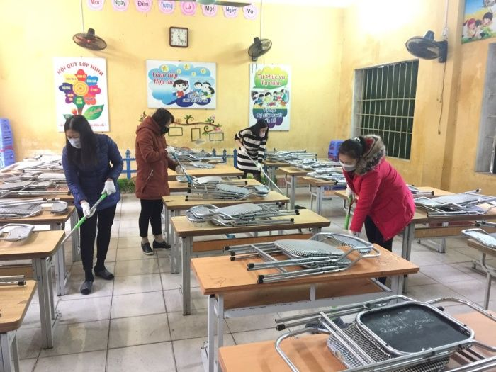
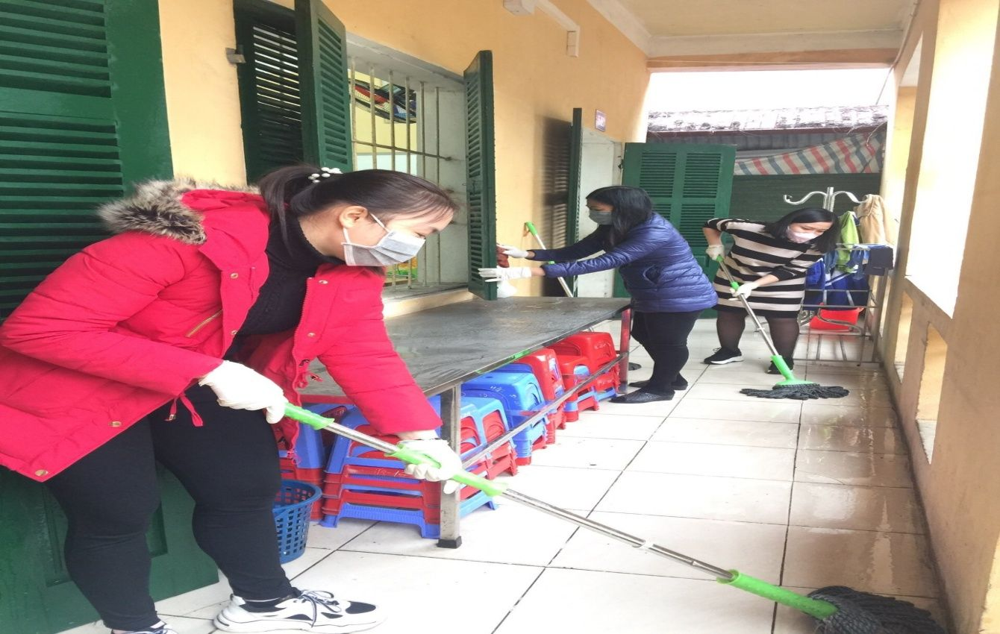
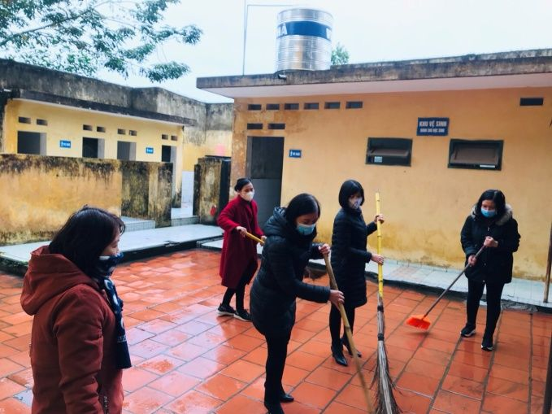
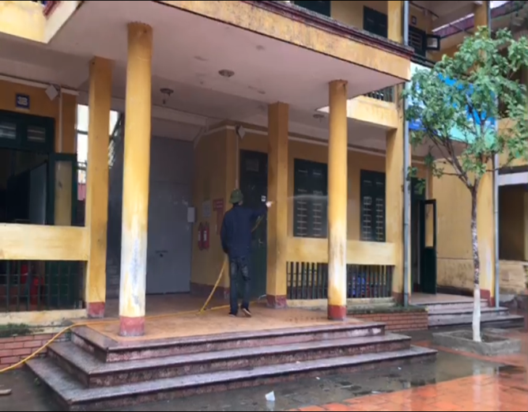

Trường tiểu học Nha Trang chủ động trong phòng, chống dịch bệnh viêm đường hô hấp cấp do chủng mới của virus Corona (nCoV) gây ra
Trường tiểu học Nha Trang chủ động trong phòng, chống dịch bệnh viêm đường hô hấp cấp do chủng mới của virus Corona (nCoV) gây ra
Trước tình hình diễn biến của dịch bệnh viêm đường hô hấp cấp do chủng mới của virus Corona (nCoV) gây ra, Trường Tiểu học Nha Trang khẩn trương thực hiện các biện pháp phòng chống dịch bệnh theo tinh thần chỉ đạo của chính quyền địa phương, ngành giáo dục.
Cập nhật liên tục văn bản chỉ đạo của cấp trên hướng dẫn phòng, chống dịch bệnh. Nhà trường đã thành lập ban chỉ đạo, tập huấn, xây dựng kế hoạch phòng, chống dịch bệnh, triển khai, phân công nhiệm vụ cụ thể tới tập thể cán bộ giáo viên, nhân viên. Kết hợp cùng công đoàn tuyên truyền cách phòng, chống dịch đảm bảo sức khỏe và tạo tâm lý yên tâm cho cán bộ, công nhân viên.
Nhà trường đã tổ chức tổng vệ sinh toàn trường lau rửa lớp học, sát trùng, phun khử trùng.
Tuyên truyền tới phụ huynh học sinh cho con hạn chế tiếp xúc môi trường bên ngoài nơi tập trung đông người, cần giữ âm cơ thể, sử dụng khẩu trang đúng cách, vệ sinh cơ thể, súc họng bằng nước sát khuẩn, thường xuyên uống nước ấm, không dùng tay đưa lên mắt, mũi, miệng, tăng cường chất dinh dưỡng nâng cao sức đề kháng cho cơ thể.
Một số hình ảnh ghi lại hoạt động phòng, chống dịch bệnh viêm đường hô hấp cấp do chủng mới của virus Corona (nCoV) gây ra của Trường Tiểu học Nha Trang.

Bà Nguyễn Thị Minh Thu - Phó
Hiệu Trưởng chủ trì họp ban chỉ đạo triển khai các giải pháp phòng, chống dịch bệnh của Nhà trường
Hình ảnh tập huấn công tác phòng, chống dịch bệnh của Nhà trường


Học sinh thực hiện rửa tay bằng nước sát khuẩn, đeo khẩu trang.




Giáo viên, nhân viên tích cực tổng vệ sinh trước khi phun thuốc sát khuẩn.
